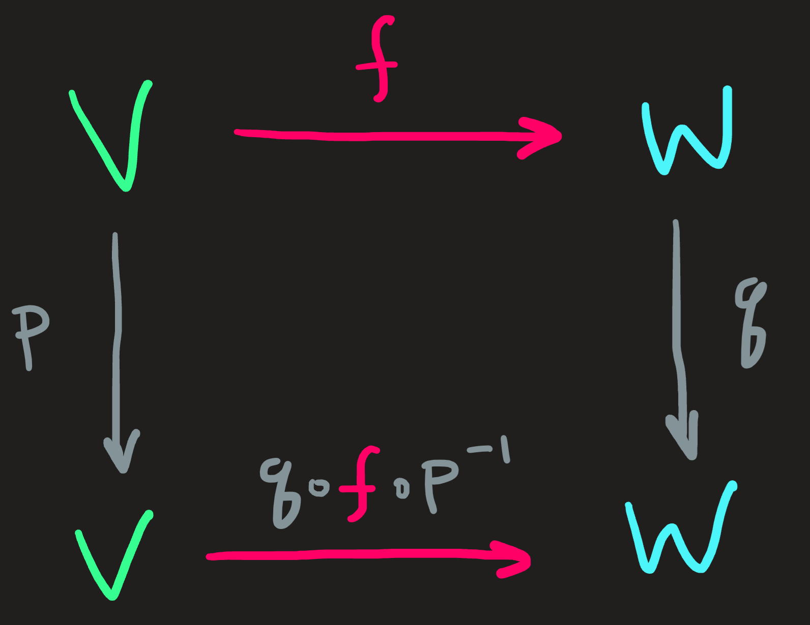
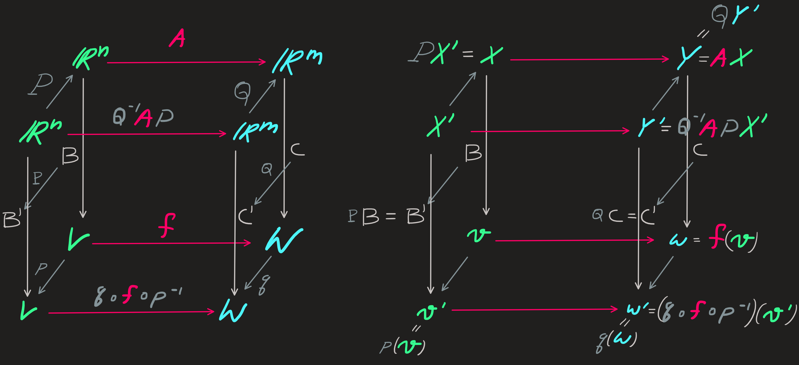

Change of basis
Change of basis of vectors
We start with a invertible (1-1 and onto) linear function \(p\), that maps \(\mathbb{V}\) into itself:
\[ \begin{align}p:\mathbb{V}&\longrightarrow \mathbb{V}\\ v&\longmapsto p(v)\end{align} \]
Choose a basis in \(\mathbb{V}\):
\[ \mathbf{B} =\begin{pmatrix}v_1 & v_2 &\dots & v_n\end{pmatrix} \]
Which, as usual, allow us to give a form to elements of our vector space:
\[ v=\mathbf{B} X\qquad\text{with}\qquad X=\begin{pmatrix}x_1\\x_2\\\vdots\\x_n\end{pmatrix} \]
Since we do not have an explicit formula for \(p\) , nor for the elements of \(\mathbb{V}\), the next best thing we can have is to know how the function acts on the basis, that is, what is the matrix \(P\) in the following formula:
\[ \begin{pmatrix}p(v_1) & p(v_2) & \cdots & p(v_n)\end{pmatrix}=:p(\mathbf{B})=\mathbf{B}P \tag{1}\]
The matrix \(P\) is full rank and thus also invertible.
We could, as we did previously, act now with \(p\) on any element of \(v\), that would return:
\[ p(\mathbf{B}X)=\mathbf{B}PX \tag{2}\]
thanks to the linearity property of \(p\). Since \(p(\mathbf{B}X)\) is in \(\mathbb{V}\) we can write as some linear combination \(\mathbf{B}Y\), substitution on Equation 2 gives us \(Y=PX\).
Recall the type of mapping (1-1? Onto?) that \(p\) is, we already stated it is invertible, thus, the nullspace and left nullspace of \(P\) are zero. Therefore, the function is 1-1 and onto, this properties are important for what follows.
Regarding change of basis, what we are interested is the formula Equation 1. Because \(p\) is 1-1 and onto, each one of the \(n\) vectors in \(p(\mathbf{B})\) is distinct and thus, they constitute a new basis for \(\mathbb{V}\). Lets make this official by giving it the name:
\[ \mathbf{B}':=p(\mathbf{B})=\mathbf{B}P\qquad\text{and}\qquad \mathbf{B}':=\begin{pmatrix}v_1' & v_2' & \cdots & v_n'\end{pmatrix} \tag{3}\]
If we read this formula from right to left, we see a map of the basis vectors into new vectors, which we promoted to new prime basis. Reading from left to right we see a decomposition (or expressing) the prime basis vectors in terms of the original (unprimed) basis vectors.
Since \(P\) is invertible, we can also write the original (unprimed) basis vectors in terms of the prime vectors:
\[ \mathbf{B} = \mathbf{B}'P^{-1} \tag{4}\]
The function \(p\) defined above transforms one \(v\) vector of \(\mathbb{V}\) into another vector \(p(v)\) of \(\mathbb{V}\). Since the underlying space is the same, we can think of \(p\) as rotating and rescaling \(v\).
The same rotating and rescalling can be observed in \(\mathbb{R}^n\), looking back at Equation 2, its matrix representation maps as follows
\[ Y=PX \tag{5}\]
where the entries of \(X\) and \(Y\) are wrt the same basis \(\mathbf{B}\) (rather than wrt \(\mathbf{B}\) and \(\mathbf{C}\) just like seen in previous lecture). Implying that \(P\) transforms the columns vector \(X\) by rotating it and recalling into \(Y\). In other words, there is an active transformation of the column vector into another different and distinct vector \(Y\). The formula Equation 5 tells us how the components (again wrt to \(\mathbf{B}\)) changed.
Equation 4 provides us with a way to write any vector written in the original basis \(\mathbf{B}\) in terms of the new basis \(\mathbf{B}'\), how?
Whatever the basis (original or new) we use to express \(v\), the vector is still the same element of \(\mathbb{V}\), therefore, given \(v\), the following equality is assured:
\[ v=\mathbf{B}X=\mathbf{B}'X' \tag{6}\]
for some columns vectors \(X\) and \(X'\), which must be somehow related.
To obtain that relation remember we know Equation 4, substituting we find:
\[ v=\mathbf{B}'P^{-1}X=\mathbf{B}'X' \]
Which in turn leads us to the inescapable conclusion that the coordinates \(X'\) of \(v\) in the new basis can be obtained from the coordinates in the old original basis \(X\) as follows:
\[ X'=P^{-1}X \tag{7}\]
which, by the way, also allow us to compute from the new coordinates the original coordinates:
\[ X=PX' \tag{8}\]
The equation Equation 7 (or equivalently Equation 8 ) relate the \(X\) and \(X'\) so that Equation 6 is true.
A key point to note when writing Equation 6 is that the vector \(v\) does not change, there is no rotation or rescaling of the vector. The formulas Equation 7 and Equation 8, despite the similarity with Equation 5, have radical different meaning! The Equation 8, translate from points of view on the vector \(v\), justifying the name passive transformation (of coordinates), rather than active transformation.
- It should be clear that \(X\) and \(X'\) are completely distinct vectors, even with different lengths, thus they were rotated and rescaled, but the key point remains, the \(v\) is still he same:
\[ v=\mathbf{B}X=\mathbf{B}'X' \]
- Warning: while \(P\) in \(\mathbf{B}'=\mathbf{B}P\) maps from original to new basis; in \(X=PX'\), the matrix \(P\) maps new to original components! The prime order is reversed.
Change of basis of linear function
The starting four ingredients:
- \(f:\mathbb{V}\overset{\sim}{\longrightarrow}\mathbb{W}\), not necessarily invertible.
- \(p:\mathbb{V}\overset{\sim}{\longrightarrow}\mathbb{V}\) which is invertible.
- \(q:\mathbb{W}\overset{\sim}{\longrightarrow}\mathbb{W}\) which is also invertible.
- A basis \(\mathbf{B}\subset\mathbb{V}\) and a basis \(\mathbf{C}\subset \mathbb{W}\)
With them we cook the following diagram:

Lets do it in steps:
Step 1:
Define the action of \(f\) on any vector \(v\in\mathbb{V}\) as usual:
\[ \mathbf{C}Y=:f(v)=\mathbf{C}AX \qquad v=\mathbf{B}X \qquad X=\begin{pmatrix}x_1\\\vdots\\ x_n\end{pmatrix} \qquad Y=\begin{pmatrix}y_1\\\vdots\\ y_n\end{pmatrix} \]
Notice that the column vector \(X\) of the components of \(v\) wrt \(\mathbf{B}\) are mapped into the column vector \(Y\) of components of \(f(v)\) wrt \(\mathbf{B}\) by the action of the matrix \(A\).
Step 2:
Use the endomorphisms \(p\) and \(q\) to define new (primed) bases for the domain and codomain of \(f\):
\[ \mathbf{B}':=p(\mathbf{B})=\mathbf{B}P\qquad \mathbf{C}':=p(\mathbf{C})=\mathbf{C}Q \]
which mean the components of \(X\) of \(v\) and the components \(Y\) of \(w\) wrt the original bases transform as:
\[ X=PX'\qquad Y=QY' \]
Step 3:
Substitute the results:
\[ \mathbf{C}'Y'=f(v)=\mathbf{C}'Q^{-1}APX' \]
which implies, the mapping between components in the new bases of both \(\mathbb{V}\) and \(\mathbb{W}\) are given by:
\[ Y'=Q^{-1}APX' \]
This equation tells us something important, just as \(A\) maps \(X\) into \(Y\), the matrix \(Q^{-1}AP\) maps \(X'\) into \(Y'\), in other words, the matrix:
\[ A'=Q^{-1}AP \tag{9}\]
play the role of \(A\) wrt to the new basis.
If a \(v\) is mapped into \(f(v)\) by \(f\), then from the point of view of \(\mathbf{B}\), the matrix \(A\) maps \(X\) into \(Y\), while from the point of view of \(\mathbf{B}'\), the matrix \(A'\) maps \(X?\) into \(Y'\); the matrices \(A\) and \(A'\) are related by Equation 9.
These calculations are summarized in the following diagram:
